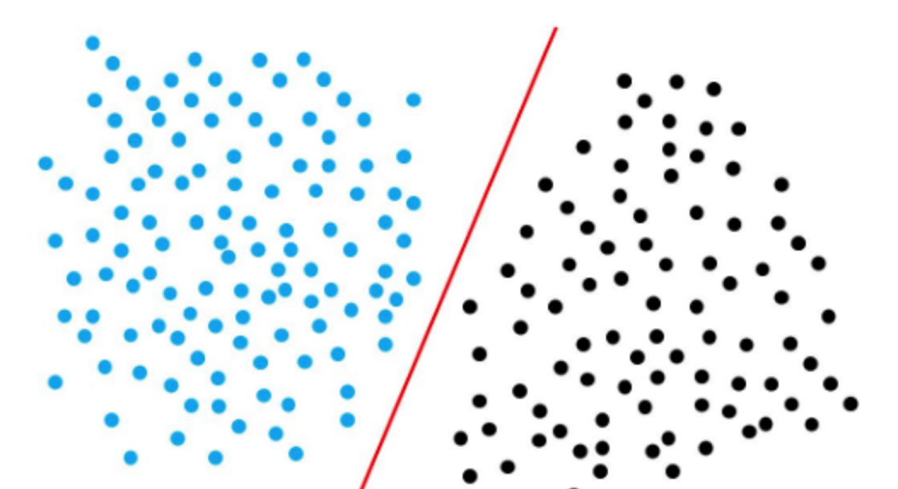

线性分类——感知机
从线性回归到线性分类，我们将线性回归的模型
\[y=w^Tx\]
变成了
\[y=f(w^Tx)\]
我们将\(f(w^Tx)\)称为激活函数（Activation Function）。
线性分类可分为判别式模型（Discriminative Model）和生成式模型（Generative Model），两者区别在于前者直接对\(P(y|w;x)\)建模，后者则对\(P(x,y)\)建模，并通过贝叶斯公式求\(P(y_i|x)\)，取其最大者，利用MAP得到所求的\(y_i\)。
视输出结果，我们将线性分类分为硬分类（Hard Classification）和软分类（Soft Classification）。
我们将分别了解线性分类的几种模型
- 感知机（判别式、硬分类）
- 线性判别分析（判别式、硬分类）
- 逻辑回归（判别式、软分类）
- 高斯判别分析（生成式、软分类）
- 朴素贝叶斯（生成式、软分类）
感知机（Perceptron）
感知机是二分类的线性模型，其输入是实例的特征向量，输出的是事例的类别，分别是+1和-1，属于判别模型。
假设训练数据集是线性可分的(对此条件下感知机的收敛性证明感兴趣的可以自行了解Novikoff定理)，感知机学习的目标是求得一个能够将训练数据集正实例点和负实例点完全正确分开的分离超平面。如果是非线性可分的数据，则最后无法获得超平面。

超平面（Hyperplane），即空间\(R^d\)中的一个子空间\(R^{d-1}\)。
设直线方程为\(Ax+By+C=0\)，任一点\(P(x_0,y_0)\)，点到直线的距离为
\[d=\frac{Ax_0+By_0+C}{\sqrt{A^2+B^2}}\]
设超平面\(h=wx+b\)，其中\(w=(w_1,w_2,w_3\cdots w_m)\)，\(x=(x_1,x_2,x_3\cdots x_m)\)，则样本点\(x'\)到超平面的距离为
\[d=\frac{w^Tx'+b}{{||w||}_1}\]
感知机的模型为
对于多元函数\(f({\rm x})=f(x_1,x_2,x_3\cdots x_n)\)，我们可求得其梯度为 \[\nabla f({\rm x})=(\frac{\partial f({\rm x})}{\partial x_1},\frac{\partial f({\rm x})}{\partial x_2},\frac{\partial f({\rm x})}{\partial x_3}\cdots \frac{\partial f({\rm x})}{\partial x_n})\] 在点\(\rm x_0\)上的Talor级数为 f({\rm x})=f({\rm x_0})+\nabla f({\rm x_0})({\rm x-x_0})+\frac 1 2 ({\rm x-x_0})^TH({\rm x-x_0})+O({|\rm x-x_0}|^3) 其中\(H\)为Hessian矩阵，当\(\rm x_0\)为临界点，且\(H\)为正定矩阵，\(f(\rm x)\)在\(\rm x_0\)处取得极小值。
梯度下降法的思路很简单，梯度的方向为函数增大最快的方向，则梯度的反方向即为函数减小最快的方向。若要求函数的极小值，我们可以选取一个初始点\({\rm x^{(0)}}=(x_1^{(0)},x_2^{(0)},x_3^{(0)}\cdots x_n^{(0)})\)，基于学习率\(\eta>0\)构建一个迭代过程，当\(i\ge 0\) \[x_1^{(i+1)}=x_1^{(i)}-\eta \frac{\partial f({\rm x^{(i)}})}{\partial x_1}\\ \vdots\\x_n^{(i+1)}=x_n^{(i)}-\eta \frac{\partial f({\rm x^{(i)}})}{\partial x_n}\] 同理，如果要求函数的极大值，只需要将方向反过来 \[x_1^{(i+1)}=x_1^{(i)}+\eta \frac{\partial f({\rm x^{(i)}})}{\partial x_1}\\ \vdots\\x_n^{(i+1)}=x_n^{(i)}+\eta \frac{\partial f({\rm x^{(i)}})}{\partial x_n}\] 这种方法被称为批量梯度下降（Batch Gradient Descent，BGD），这种方法利用了全数据集，当目标函数为凸函数时，一定能实现全局最优。然而正因为其用到了全部数据，每次迭代都需要对所有样本计算，训练效率低。
因此随即梯度下降（Stochastic Gradient Descent，SGD）应运而生，这种方法并不使用全部数据，而是在每次迭代前随机选取一个样本对参数进行更新，大大提高了效率。然而其劣势也很明显，因为没有用到全部数据，准确度有所下降，且存在收敛到局部最优而不是全局最优的可能性。因为每次只用到一个样本，并行效率低。
批量梯度下降（Mini-Batch Gradient Descent，MBGD）综合了以上两种方法的特点，每次迭代前随机选取一小批数据对参数进行更新。在略微舍弃效率的情况下提高了准确度，也提高了并行效率。
回到感知机算法，我们可以将感知机模型变为 \[L(w)=\sum_{x_i\in M}-y_iw^Tx_i\] 其中\(M\)为被错误分类点的集，显然无法使用BGD，在这里我们可以选用常规的SGD。
除了感知机算法的原始形式外，我们还可以视情况采取感知机算法的对偶形式。
根据随机梯度下降法的要求，我们可以求得\(w\)和\(b\)的梯度更新公式 \[\begin{aligned}w&\gets w+\eta y_ix_i\\b &\gets b+\eta y_i\end{aligned}\] 经过\(n\)次修改后 \[\begin{aligned}w&=\sum_{x_i\in M}\eta y_ix_i=\sum_{i=1}^N \alpha_iy_ix_i\\b&=\sum_{x_i\in M}\eta y_i=\sum_{i=1}^N \alpha_iy_i\end{aligned}\] 其中\[\alpha_i=\eta n_i\]。于是感知机模型对偶形式为 \[f(x)=sign(\sum_{j=1}^N \alpha_jy_jx_jx_i+b)\\ \begin{aligned}\alpha_i &\gets \alpha_i+\eta \\ b &\gets b+\eta y_i\end{aligned}\] 可以看出，对偶形式与本质形式没有区别，然而在对偶模型中，所有样本点的数据都以内积的形式存在，因此只要我们事先求得所有的内积，即Gram矩阵，即可大大提升效率。当向量维数过高时，应选择对偶形式加快计算。